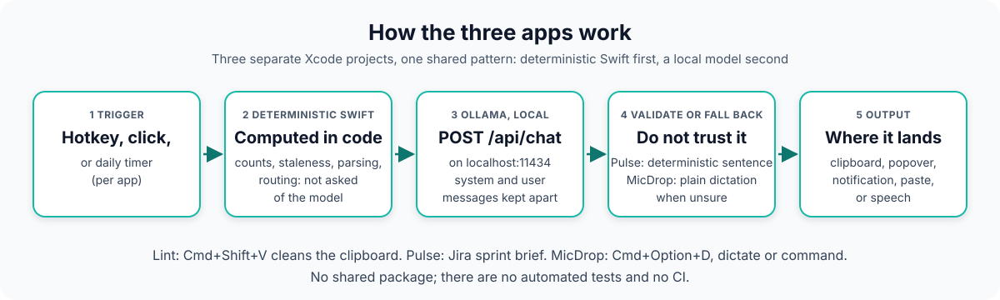

Portfolio project: three native apps, hand-tested, no automated tests
mac-ai-apps
Native macOS menu bar apps that use a local LLM
Three small native apps, each a SwiftUI MenuBarExtra that talks to Ollama on localhost:11434: Lint cleans clipboard text, Pulse summarizes a Jira sprint, and MicDrop turns a spoken phrase into cleaned-up dictation or a command. They are separate Xcode projects with no shared package, built to learn native macOS development and local-model integration end to end. There are no automated tests, no CI, and no measured results: everything was checked by hand.
See what is measuredView the repoWhat is not built
- 3 native macOS apps: Lint, Pulse, MicDrop
- No automated tests, no CI
- Tried by hand only
- MicDrop is a work in progress
- Not packaged or notarized
- macOS 15.5 target not built here

01
The problem
Everyday text cleanup, sprint status and voice input, without sending data to a cloud API.
These apps touch clipboard contents, ticket data and voice, and none of that needs to leave the machine, so they use local models on purpose. The recurring design theme is not trusting a small model.
Small models drift
Small local models are unreliable for open-ended tasks, which is why the apps validate or constrain their output.
Compute what can be computed
Pulse computes counts, overdue and stale flags, sorting and per-assignee breakdowns in Swift, and asks Ollama only for a short narrative.
Default to the safe action
MicDrop falls back to plain dictation whenever intent classification is unsure, and Slack sends wait for an explicit Confirm click.
02
How it works
Each app follows the same shape, copied by hand between projects rather than shared as a package: a trigger, deterministic Swift for anything that can be computed, a local model call, a validation or fallback step, and an output.

Swipe the diagram sideways to see all of it.
Stages of the diagram, one at a time
Stage 1 Trigger
Lint: Cmd+Shift+V (Carbon RegisterEventHotKey) or the menu bar. Pulse: menu bar click, refresh, or a daily 9am notification digest. MicDrop: Cmd+Option+D toggles recording.
Stage 2 Deterministic Swift
Pulse computes counts, overdue and stale flags (in progress for 3+ days), sorting and per-assignee breakdowns in Swift. MicDrop routes each recognised intent to one handler per command.
Stage 3 Local model
Each app uses an Ollama /api/chat client with separate system and user messages. Lint and MicDrop use llama3.2:latest; Pulse uses qwen2.5-coder:7b. MicDrop transcribes on-device with WhisperKit first.
Stage 4 Validate or fall back
Pulse checks the model's brief against computed facts and falls back to a deterministic sentence. MicDrop defaults to plain dictation on any failure, malformed JSON or doubt.
Described in the READMEs; none of it is covered by an automated test.
Stage 5 Output
Lint writes the cleaned text back to the clipboard and plays a sound. Pulse shows a popover and can copy standup text. MicDrop pastes dictation with a simulated Cmd+V or runs a command; query results are spoken and shown as a notification.
03
What is measured
There are no measured results for these apps: no tests, no benchmarks, no latency or accuracy figures. What can be verified is what each app does and the behaviours the READMEs document, which were read from the source and tried by hand. The tables below are descriptions, not test results.
Lint, Pulse and MicDrop are separate Xcode projects with no shared package.
| App | Trigger | Model | Output |
|---|---|---|---|
| Lint | Cmd+Shift+V or menu bar | llama3.2:latest | Cleaned text written back to the clipboard, plus a sound |
| Pulse | Menu bar, refresh, or daily 9am digest | qwen2.5-coder:7b | Sprint brief, flags, and a Copy for Standup action |
| MicDrop | Cmd+Option+D, recording auto-stops after about 1.5 seconds of silence | llama3.2:latest (intent), WhisperKit base.en (speech) | Pasted dictation, or an executed command |
Caveat Taken from the READMEs and read from source; none of it is covered by an automated test, and no run outcome is recorded in the repository.
Source: README.md, Lint/README.md, Pulse/README.md, MicDrop/README.md
As listed in MicDrop/README.md ("Commands the code implements"). MicDrop is marked work in progress.
| Intent | What it does | Notes from the README |
|---|---|---|
| calendar | Reads today's events | EventKit, read-only |
| reminder | Creates a reminder titled with the spoken text | No due-date parsing |
| note | Creates a new note | AppleScript, Notes.app |
| battery | Reports percentage and whether on AC power | IOKit power sources |
| volume | Set a level, mute, up/down by 15 | The unmute branch is unreachable |
| webSearch | Opens a Google search in the default browser | NSWorkspace |
| openApp | Opens an app by name | A few web-only services open in the browser |
| music | Play, pause, next, previous, what's playing | Music.app only |
| timer | In-process timer that fires a notification | Lost if the app quits |
| slack | Reports channel count, or resolves a channel and waits for a Confirm click before posting | User token from a local config file; cannot see or send direct messages |
| jira | Counts your tickets in open sprints by status category | Reads Pulse's local credentials file |
Caveat This lists what the source implements, not what was verified to work. The README states there is no automated test suite and that behaviour is read from the source.
Source: MicDrop/README.md
App Sandbox setting per app, from the committed .entitlements files and the READMEs.
| App | App Sandbox | Notes |
|---|---|---|
| Lint | On | Network client entitlement only, per the README |
| Pulse | Off | The README says Pulse is not sandboxed and has a debug log |
| MicDrop | Off | Needed for AppleScript, simulated keystrokes and shelling out to open, per the README |
Caveat These are configuration values in committed files, not a security review. Sandboxing and entitlements were not audited.
Source: Lint/Lint/Lint.entitlements, Pulse/Pulse/Pulse.entitlements, MicDrop/MicDrop/MicDrop.entitlements
04
Architecture pattern
Pattern Deterministic-first with a local model behind a guard: compute what can be computed in Swift, ask a small local model only for what it must do, and validate or fall back.
There is no shared package; each app is small enough that copying a pattern was simpler than extracting a library. Reused by hand: the MenuBarExtra scaffold, the Ollama HTTP client shape, the UNUserNotificationCenterDelegate used so foreground notifications show with sound, and the Carbon global hotkey. The only third-party package is WhisperKit, used by MicDrop.
- Hotkey, menu bar click, or timerper-app trigger
- Per-app controllerorchestrates the steps
- Deterministic Swiftcounts, parsing, routing
- OllamaClientPOST /api/chat on localhost
- Local modelOllama on the same machine
- Validate or fall backPulse and MicDrop
- Outputclipboard, popover, notification, paste, or speech
05
Competencies demonstrated
Native macOS development
MenuBarExtra, AppKit interop, CarbonRegisterEventHotKeyglobal hotkeys, EventKit, IOKit, AppleScript, simulated paste via CGEvent.Local LLM integration
Ollama
/api/chatclients using separate system and user messages; JSON-mode intent classification in MicDrop.Defensive use of small models
Pulse checks the LLM brief against ground truth and falls back to a deterministic sentence; MicDrop defaults to dictation when unsure.
Safe actions
MicDrop Slack sends wait for an explicit Confirm click.
Debugging
Per-app write-ups of root-caused bugs in the Lint and Pulse READMEs (three for Lint, five for Pulse).
Secrets hygiene
No credentials in the repo; local
0600files outside it, plus Keychain storage code in Pulse.
06
What is not built or not verified yet
Taken from the repository's own Known limitations and the MicDrop README. This is the prominent part of this page on purpose: the apps are unfinished and unverified in ways that matter.
- not verified
No automated tests
There are no automated tests. Everything was checked by hand.
- not verified
No CI
There is no CI, so no build or test is run on any change.
- not verified
macOS 15.5 build claim
The "macOS 15.5+" platform claim comes from the Xcode projects' deployment target. These apps were not built or run to produce this page.
- limit
MicDrop is not sandboxed and logs transcripts
MicDrop is not sandboxed and
DebugLog.swiftappends debug lines, including transcripts, to/tmp/micdrop-debug.log. The README says to delete or disable it before sharing a build. Pulse also has a debug log and is not sandboxed. - limit
Credentials in local files
No code-signing identity is configured; builds use the local ad-hoc setup, which is why Pulse stores credentials in a local file instead of the Keychain.
- limit
MicDrop: unmute can never run
The "unmute" branch cannot be reached because it matches the mute check first.
- not built
MicDrop: Gmail
MicDropCredentials.swifthas fields for a Gmail OAuth client, but no Gmail command exists. - not built
MicDrop: other missing pieces
Reminder due dates, Spotify support, Focus / Do Not Disturb control, streaming transcription (the whole recording is transcribed after it stops), and cleanup of leftover "Miko" strings in notification titles from an earlier working name.
- not built
Packaging
Apps are not packaged or notarized; run them from Xcode or a local Release build.
- limit
Small local models
Small local models are unreliable for open-ended tasks, which is why the apps validate or constrain their output.
07
Roadmap
- DoneLint: global hotkey clipboard cleaner on a local model
- DonePulse: Jira sprint brief with a validated model narrative, Copy for Standup, and a daily 9am digest
- DoneMicDrop: dictation plus eleven commands, with Slack sends behind a Confirm click (work in progress)
- Not doneAutomated tests (none exist; not scheduled)
- Not doneCI (none exists; not scheduled)
- Not doneMicDrop gaps listed in its README: Gmail command, reminder due dates, the unreachable unmute branch (not scheduled)
- Not donePackaged and notarized builds (not done; not scheduled)